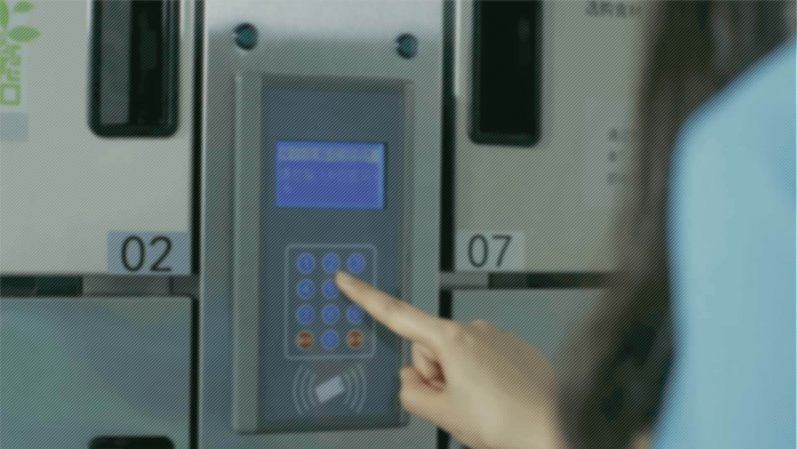

投中网获悉，9月12日食行生鲜确认完成由天图领投的新一轮融资，融资金额为2.9亿元人民币。
食行生鲜专注于满足老百姓日常买菜需求的O2O平台，独创“到柜模式”：通过手机下单，小区冷柜自提，大幅降低了菜品损耗和物流成本，使手机买菜比传统菜场更便宜、更便捷，选择也更丰富。
食行生鲜目前已进入苏州、无锡、上海三座城市，运营有超过2000个社区站点，平均日订单量超过6万单，并在苏州实现首个城市盈利。
2016年4月，食行生鲜获得C轮融资2.49亿元，由江苏省毅达资本领投。资料显示，食行生鲜调研于2011年，产品于2012年上线，天使轮创始人自筹，模式经过探索后，在2013年获得协立资本A轮4500万人民币。2015年5月又获得天图资本领投、协立资本、易孚泽资本跟投B轮融资。至此，食行生鲜已获得超7亿元融资。
与其他生鲜零售商相比，食行生鲜从创立之初，就专注于消费者日常买菜这个刚需市场。作为一个刚需品类，每家每户每天都需要买菜，但受限于居高不下的终端配送成本、日常菜品的高损耗率、低客单价等因素，目前市面上的生鲜电商大多供给的是高端、小众品类，而不是消费者刚需、日常的菜品。
食行生鲜通过社区自提柜模式，将传统B2C式的终端快递高成本，转化成了C2B的低物流成本模式；通过会员预订式消费，最大程度降低了生鲜食品的高损耗率；同时通过订单式农业、大规模基地直采和与政府监管机构等第三方的合作，确保了生鲜菜品的安全、健康和新鲜。
食行生鲜目前运营的超过2000个社区站点，全部采用自主知识产权的有源制冷，冷藏柜内温度保持在3-8摄氏度，冷冻柜内温度保持在-18摄氏度。
“用户可以用菜市场的价格，买到和山姆会员店一样品质的生鲜蔬菜。”食行生鲜创始人张洪良介绍说。
食行生鲜透露，其独创的“到柜”模式已经经受了市场的验证。“经过5年的探索，我们已经在起家的苏州，也是覆盖密度最大的城市，实现了全城范围的规模性盈利。”
目前食行生鲜重心仍然放在华东市场的苏州、上海、无锡。“生鲜市场达三万亿，但属于需要精耕细作的行业，不能靠烧钱跑马圈地、要规模不要质量，把华东两亿人服务好已经是非常大的市场。”张洪良说，“你只要专注去围绕消费者他需要什么，然后你有高效的方式来解决这个行业的痛点，你就会持续得到消费者认可。做零售更重要的是关注运营效率，用户体验，这些比我开了多少城市更重要。做深做透区域市场，在实现盈利的情况下扩张，正在成为生鲜零售领域创业者的共识。
为了提升用户体验，食行生鲜给每个会员家庭还免费赠送了智能卡片，老人只需要拿着卡在楼下的食行生鲜自提柜一刷，就可以自助提取预订的商品。
基于预订制和全程有源冷链体系，使得食行生鲜可以给用户提供更丰富的品类。以苏州为例，食行生鲜会员可选择的品种超过4000种。
自2012年10月首个社区自提柜亮相苏州，食行生鲜凭借独创的“到柜模式”和高速增长数据，相继完成AB轮2.25亿、C轮2.49亿和本轮2.9亿融资，总融资金额超过7.6亿人民币。
张洪良表示，新一轮融资之后，食行生鲜将复制苏州发展模式，发挥苏沪经济半小时的区域优势，加大上海等地基础设施投入力度，发挥自身供应链优势，立足苏州，将上海、无锡等长江三角洲区域连成一片。
最早投资食行的协立投资，一直深度陪伴食行的成长，从A轮开始坚持连续投资食行生鲜。其创始合伙人翟刚表示食行模式综合考虑生鲜行业特点和痛点，权衡打造新型生鲜供应价值链，在企业能够盈利的前提下，使广大用户可以消费更新鲜、更安全、更便宜、更丰富、更便捷的生鲜产品。
天图资本投资人冯卫东表示，生鲜是电商的最后一块大市场，生鲜零售也是天图重点布局的赛道之一。食行生鲜开创的“到柜模式”，需要的物流成本比“到家模式”低一半，可以在更低的客单价实现盈利。而更低的客单价，意味着能够进入日常买菜这样的高频低额场景，最符合消费者的日常买菜习惯，而购买新奇特的高客单价场景只能做为补充。
易观发布的数据显示，预计2017年，中国生鲜电商交易规模将达到1449.60亿元人民币，同比增长58.6%。预计到2019年，中国生鲜电商交易规模将达到3506.08亿元人民币。而整个中国生鲜是一个数万亿级的市场，互联网化、线上线下融合是整个生鲜市场的大趋势。


 苏公网安备 320212150号
苏公网安备 320212150号